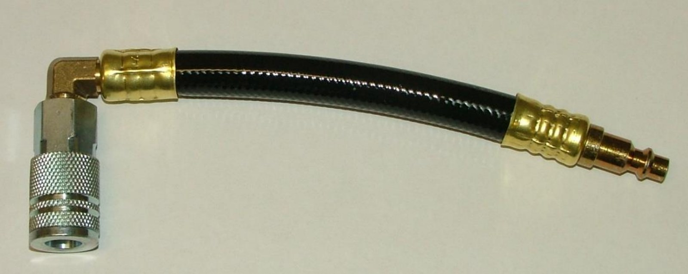

Doc no. MOC-TSB-13-35 // Vol. 13 No. 35 // Dec 31, 2013 // Transmission
Hose Assembly for Standard ATF Adapter Kit
New94505
MOC has updated the Standard Transmission Adapter Kit (Part No. 94505) by adding the 90 Degree Intermediate Hose Assembly.
What's new
This hose is required when using the Ford adapter (Part No. 94786). It is also useful to connect transmission adapters in tight spaces where a straight connection will not fit.
Contact
For more information, contact the Machine & Equipment Department at 866.244.6621.

Part numbers
| Part No. | Description | Notes |
|---|---|---|
| 94855 | Assembly, Hose, 90 Deg. Intermediate | |
| 94505 | Standard Transmission Adapter Kit | |
| 94786 | Ford adapter |